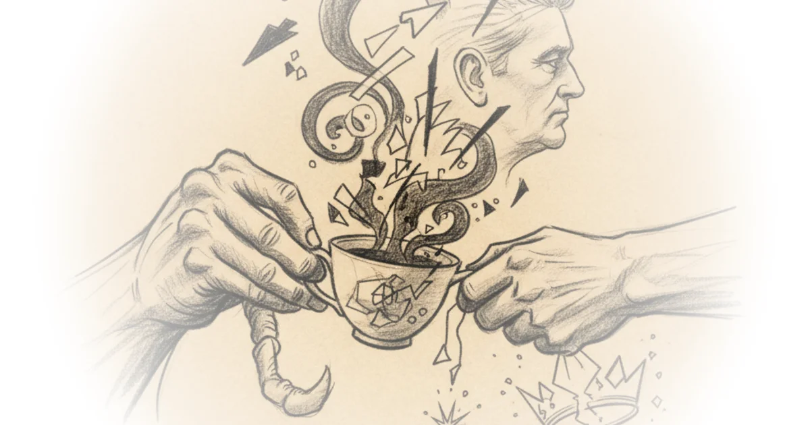

Phillips P. O'Brien cuts through the noise of political theater to reveal a stark strategic reality: the administration's aggressive military posture has paradoxically handed the adversary the very leverage it sought to deny. The most arresting claim here is not about battlefield tactics, but about the inversion of power dynamics, where the entity being threatened now dictates the terms of any potential exit.
The Illusion of Victory
O'Brien dissects the administration's public narrative, arguing that the insistence on "total victory" is a desperate cover for a deteriorating strategic position. He writes, "Trump seems to understand this, which is why he is desperately and publicly trying to create the narrative that he has already won." This observation is crucial because it reframes the rhetoric of strength as a symptom of weakness. The author points out that the executive branch is now trapped by its own escalation, unable to de-escalate without admitting that the initial gamble failed.

The commentary highlights a jarring disconnect between the administration's stated goals in 2018 and the current reality. O'Brien notes that the original policy demands included stopping support for regional proxies and ending threats to freedom of navigation. Yet, he argues, "Iran at this point has rejected every single requirement that Trump called for it make when he rejected JCPOA." This is a devastating critique of the "maximum pressure" doctrine. By withdrawing from the Joint Comprehensive Plan of Action (JCPOA) and initiating conflict, the US has lost the diplomatic scaffolding that once constrained Iranian nuclear progress.
The US is now, after using military force, set to get a deal from Iran that is far less satisfactory than the JCPOA, let alone the ambitious policy goals laid out by Trump himself in 2018.
Critics might argue that the administration's hardline stance was necessary to force Iran to the table, but O'Brien's evidence suggests the opposite: the table has been flipped, and the US is now the one begging for a seat. The author suggests that the administration's opening gambit has effectively regressed to a version of the 2015 deal, but with significantly worse terms because the US now desperately needs the Persian Gulf reopened.
The Kharg Gambit
The analysis shifts to the potential escalation of seizing Kharg Island, a move O'Brien characterizes as a high-stakes bluff with catastrophic potential. He describes the logic as "the perfect kind of mafia threat to make to Iran," yet he immediately dismantles its viability. The author warns that seizing the island would be akin to "taking a hostage that the US really will not want to hurt."
O'Brien draws a sobering historical parallel to illustrate the logistical nightmare of holding such a position. He suggests the situation could devolve into a "Persian Gulf version of Dienbienphu," where a small force is cut off and subjected to relentless fire. This is not merely a tactical concern; it is a strategic trap. The author argues that if the US levels the facilities on Kharg, "oil prices skyrocket even more and stay high for much longer," creating a self-inflicted economic wound.
The risk extends beyond economics to the safety of US personnel. O'Brien writes, "US forces would also have to be supplied while the US could not get ships up the Straits." This creates a vulnerability that Iranian forces, who have already improved the accuracy of their ranged fires, are eager to exploit. The author notes that while the volume of Iranian fire may have decreased, "the accuracy of their fires has risen considerably," turning any static US position into a target.
Seizing Kharg can be likened to taking a hostage that the US really will not want to hurt. It arguably gives the US far less leverage than it understands.
A counterargument worth considering is that the mere threat of seizing Kharg might force a negotiation before any shots are fired. However, O'Brien counters that the Iranians view this as an opportunity to extract major concessions rather than a reason to capitulate. The administration's threat to destroy Iranian power plants if the Straits are not opened within 48 hours is cited as a "terminally stupid move" that signaled panic rather than resolve.
The Bottom Line
Phillips P. O'Brien's most compelling contribution is the demonstration that military escalation has not weakened Iran's hand but has instead solidified its control over the region's most critical choke point. The piece's greatest strength lies in its refusal to accept the administration's narrative of success, exposing the gap between rhetorical posturing and the grim mechanics of war. The biggest vulnerability for the US is the realization that it may have to choose between a humiliating retreat or a massive, uncontrolled escalation that could destabilize the global economy.